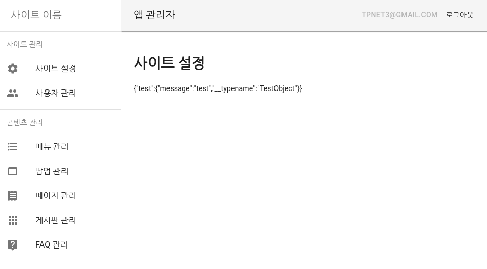
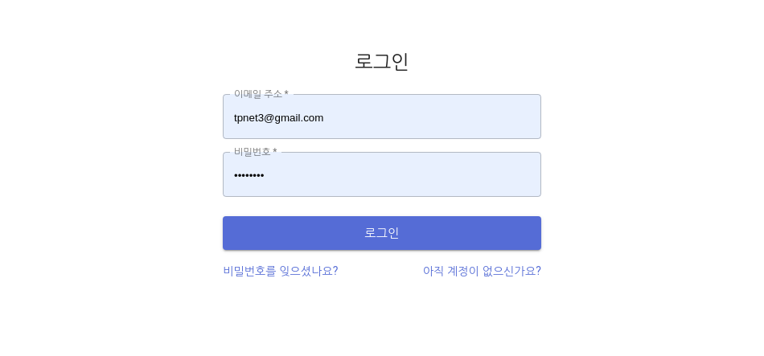

BounceCode CMS
궁금하신게 있으시면 언제든 말씀해주세요.
카카오톡 오픈채팅: https://open.kakao.com/o/ghJjrKbb
개발 환경
# DB 실행
docker-compose up
# 패키지 설치
yarn
# 서버 실행
yarn dev
# 시드 데이터 추가 (최초 관리자 계정 생성 등)
yarn seed:run
# 클라이언트에서 사용하는 gql 및 hooks 생성 (client/generated/graphql.tsx)
yarn codegen
# Storybook 실행
yarn storybook
# Jest 유닛 테스트
yarn test
# # Jest 유닛 테스트
# docker-compose run --rm app.bouncecode-cms bash -c "yarn test"
# # Storybook, Jest, Typedoc 문서화
# docker-compose run --rm app.bouncecode-cms bash -c "yarn docs"프로덕션 환경
# 이미지 가져오기
docker-compose -f docker-compose.yml -f docker-compose.prod.yml pull
# DB 및 서버 실행
docker-compose -f docker-compose.yml -f docker-compose.prod.yml up -d
# 시드 데이터 추가 (최초 관리자 계정 생성 등)
docker-compose run --rm app.bouncecode-cms bash -c "yarn seed:run"관리자 설정
# 관리자 추가
docker-compose run --rm app.bouncecode-cms \
bash -c "yarn admin:create --email=tpnet3@gmail.com --password=PASSWORD"
# 관리자로 전환 (회원가입 된 상태여야 합니다.)
docker-compose run --rm app.bouncecode-cms \
bash -c "yarn admin:add --email=tpnet3@gmail.com"스크린샷


